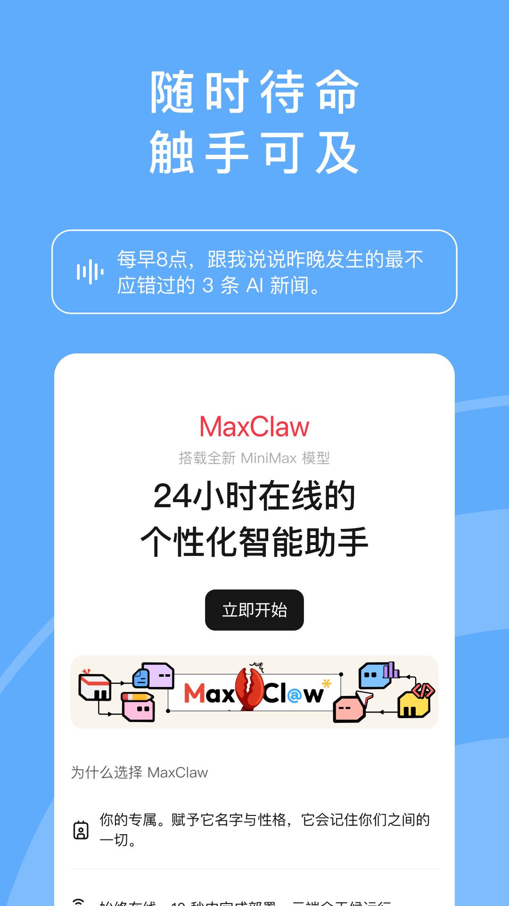

完全不懂AI也能上手的MiniMax——五分钟跑通第一次任务
还没碰过AI工具的小白也不怕，这篇从零带你装软件、跑通第一个任务、解锁最值得先玩的三个功能，连术语都帮你翻译成大白话。
这篇能带你从完全不懂到用起来——而且不需要任何基础
第一次听到 MiniMax 这名字，你可能跟我当初一样懵：这不就是又一个AI聊天工具吗？点开MiniMax官网一看——嚯，它能帮你搭整个网站、生成视频、把录音转成简报、连PPT的配图都包了。说它是一个全能的AI干活搭子，比"聊天机器人"准确得多。
打个生活化的比方：你不用自己写代码、不用装一堆软件、不用学什么API——就像给一个刚入职的实习生派活，把你想要的东西用大白话告诉他，他就自己去找资料、写报告、做PPT、甚至搭一个能访问的网页给你。唯一的区别是，这个实习生不会喊累、不会请假，而且每天都在变聪明。
这篇就是为完全没碰过AI工具的朋友写的。你跟着走一遍，五分钟之内就能让它帮你干成第一件事。

五分钟上手：从下载到第一次跑通
第一步：装软件
MiniMax 有手机版也有桌面端。手机版直接去应用商店搜就行，iOS 和安卓都有上架。如果你手边没有应用商店，也可以去它的官方下载拿安装包——两种途径都行，装完就能用。
第二步：注册拿积分
第一次注册会送你一笔免费积分，有效期三天。别舍不得用，这笔积分就是让你第一次跑流程练手的——第一天就把它花掉是最划算的。进 App 之后先点个人中心看一眼余额，心里有个数。
第三步：写指令，派第一单
这是最关键也最简单的一步。你不用学什么特殊语法，就把想让它干的事用大白话写出来。
不知道写什么？给你一个万能开头："我有一份[你的文档名]，帮我把核心内容整理成一份带图表的分析报告。"
要是手里正好有PDF、Word文档、甚至一段录音，直接从附件入口丢进去就行——PDF、幻灯片、音频、视频它都能读。
第四步：别慌，它可能会反问你
发出去之后，MiniMax 有时候会主动问你几个问题：比如你想要什么风格、报告要多长、有没有特别关注的部分。这不是故障，是它在确认方案。你回答得越具体，成品就越接近你想要的。
要是它问你一些听不懂的技术问题（比如"数据库用什么"），你就直说"帮我选最合适的就行"——新手阶段不需要操心这些。
第五步：收成品
等它跑完，所有交付的东西会一次性推给你：报告文件、代码、网页链接……按需下载就行。要是任务里包含了网页，直接把那个链接发给任何人就能访问，连部署都帮你搞定了。
第一次跑完的那种感觉——真的像有个团队在帮你干活。

上手后先玩这三个功能——新手最值得碰的
跑通第一次之后，你可能想知道"接下来玩什么"。别被那堆眼花缭乱的功能吓到，先把这三个摸熟，90%的日常场景就覆盖了。
一、给它丢一份文档，让它帮你做总结
这是使用频率最高的功能了。你有没有堆着好几百页的PDF报告没看？有没有老板发的长邮件懒得读？把文件一丢，说"帮我提炼核心要点，列成清单"，半分钟就能拿到结果。
你会发现它不止能读文本——录音、视频上传进去，它能把内容整理成纪要。这背后靠的是它的长上下文能力（简单说就是它能一次性记住非常长的内容，不会读到后面忘了前面），整本书塞进去都不怕"断片"。
二、让它帮你画图
你肯定有过这种时候：写PPT需要一张配图，但找不到合适的；想给朋友做一张海报，但不会设计。MiniMax 的图像生成功能可以帮你搞定。
有两种玩法：独立生图和任务内配图。独立生图就是直接跟它说"帮我画一张什么什么风格的图"；任务内配图更厉害——你让它"帮我做一份PPT，顺便配上合适的插画"，它会自己把图和内容配套生成，不用你分别忙活。
语音生成同理——想给视频配一段口播，或者让它把你的报告读成音频简报，直接说就行，音色还能选。
三、让它帮你写代码/搭小工具
这听起来很硬核，但其实新手也能用。比如你想做一个简单的记账网页，或者搞一个图片批量压缩的小工具——不用自己敲一行代码，告诉它"我想要一个能XX的网页，帮我搭出来"，它不仅会写代码，还能帮你部署好，给你一个能打开的链接。
它的编程能力背后靠的是自研的 M3 模型——这是目前 MiniMax 家族里最强的主力，在代码能力上确实下了功夫。当然新手不用管这些细节，你只要知道"你说什么，它就尽力帮你实现"。想深入了解 M3 的进阶玩法和其他模型的能力边界，去MiniMax文档里翻就行。
小白最常问的三个问题
积分用完了怎么办？会不会偷偷扣钱？
积分是按任务实际消耗来算的——轻量问答花得少，搭网站这种复杂任务花得多。新用户的免费积分用完之后，有订阅制和积分包两种付费方式，都是明码标价的。App 里每笔消耗都能查到明细，不会偷偷扣。
为什么有时候它会问我要 API 密钥？
这是因为某些任务需要调用外部服务（比如代码托管平台、数据库）。MiniMax 用一种安全封装的方式收集这些信息，不会明文出现在对话里。新手阶段碰到这种问题，如果不明白就直接说"帮我选最简单的方案"，不用纠结。
生成的图像/语音额度为什么感觉用得特别快？
这里有个新手容易忽略的设计：文本、图像、语音共享同一个额度池。你生图多了，留给写文档的额度就少了。月底额度紧张的时候，优先把额度留给最重要的任务就行。订阅档位越高，池子越大，日常使用其实 Plus 档就够了，只有需要每天生成视频的才需要更高档位。
最后说一句
从完全不懂到跑通第一次任务，真的只需要几分钟。别被那些技术名词吓跑——MiniMax 的设计思路就是让"AI干活"这件事像跟人说话一样简单。第一次任务别给自己立太高的目标，就从"让它帮我整理一份熟悉的文档"开始，体验一遍流程，后面的所有玩法都是这个流程的变体。
想深挖进阶用法的话，它的中文文档里有完整的功能说明和技巧——从怎么写更好的指令，到怎么搭配多模态输入输出，写得挺细的。用熟基础之后再慢慢翻，不会有信息过载的压力。